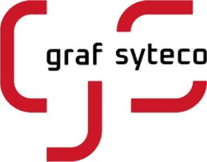

Trade Mark Journal No.2026/003 16 January 2026
WO0000001875406 (9,40,42)
Office of origin: European Union Intellectual Property Office (EUIPO)
Date of International Registration:5 March 2025
Date of designation in the UK:
12 September 2025

The mark contains the colours Red (CMYK 15/100/90/0, RGB 206/22/37) and Black (0/0/0/100, RGB 0/0/0).
- Class 9
- Computer network adapters; testing apparatus not for medical purposes; approximation detectors; aerials; electronic indicator panels; electric control apparatus; steering apparatus, automatic, for vehicles; motion sensing input devices; projected capacitive touch sensors; computer operating programs, recorded; computer programs, downloadable; computer programs for editing images, sound and video; computer programs for use in the autonomous navigation of vehicles; computer programs for use in autonomous control of vehicles; computer interface apparatus; computer software, recorded; computer software for controlling the operation of audio and video devices; computer software for global positioning systems; computer software for application and database integration; computer software to automate data warehousing; computer software for database management; data communications apparatus; data communications software; data loggers and recorders; data management software; data processing apparatus; diagnostic apparatus, not for medical purposes; digital indicators; digital electronic controllers; digital force gauges; digital video cameras; pressure measuring apparatus; batteries, electric, for vehicles; electric installations for the remote control of industrial operations; electricity indicators; electric control panels; electrical remote control apparatus; electric sensors; safety monitoring apparatus [electric]; monitoring units [electric]; monitoring control apparatus [electric]; electronic meters; electronic regulators; electronic sensors; electronic memory units; electronic controllers; touch pads [electronic]; electronic monitoring instruments, other than for medical use; ethernet adapters; driver assistance systems for motor vehicles; vehicle tracking apparatus; optical fibre sensors; remote control apparatus; global positioning system [GPS] apparatus; graphic display terminals; computer networking hardware; downloadable computer software for collecting, analyzing and organizing data in the field of deep learning; downloadable video recordings; industrial automation controls; interactive software based on artificial intelligence; interfaces for computers; wireless controllers to remotely monitor and control the function and status of other electrical, electronic, and mechanical devices or systems; communications equipment; telecommunications equipment; communications servers [computer hardware]; artificial intelligence software for surveillance; artificial intelligence software for driverless cars; artificial intelligence software for vehicles; artificial intelligence software; chargers for electric batteries; LAN [local area network] operating software; LAN [local operating network] hardware (term considered linguistically incorrect by the International Bureau pursuant to Rule 13 (2) (b) of the Regulations); luminous indicators; transducers; monitors; navigation, guidance, tracking, targeting and map making devices; photoelectric sensors; piezoelectric sensors; security cameras; security control apparatus; security software; industrial automation software; software for GPS navigation systems; closed circuit TV [CCTV] software; software for the integration of artificial intelligence and machine learning in the field of big data; industrial process control software; software for monitoring, analysing, controlling and running physical world operations; control devices for vehicle navigation apparatus; sensor controllers; converters, electric; keypads for security alarms; telematic terminal apparatus; temperature sensors; video editing software; video imaging systems; camcorders; video monitor controllers; video surveillance systems; wireless local area network devices.
- Class 40
- 3D reproduction services; preparation of electronic circuitry by solution deposition; custom assembling of electronic components for communication devices; digital enhancement of photographs; custom manufacture of semiconductor components, devices and circuits; custom manufacture of semiconductor circuits.
- Class 42
- Creating programmes for data processing; development of systems for the processing of data; development of computer programs; engineering consultancy relating to computer programming; advisory services relating to science; designing of electronic systems; engineering consultancy relating to data-processing; technical project studies in the field of computer hardware and software; industrial analysis and research services; design, development and programming of computer software; database design and development; development of systems for the transmission of data; design services relating to data transmission test tools; development of systems for the storage of data; hosting web sites; computer software technical support services; provision of on-line support services for computer program users; updating of computer software; upgrading of computer software; installation of firmware; consultancy services relating to computer networks using mixed software environments; computer network services; IT services; information services relating to the application of computer networks; information services relating to the development of computer networks; expert consultancy services in connection with computing networks; development of databases; rental of a database server (to third parties); platforms for artificial intelligence as software as a service [SaaS]; technical data analysis services; technical testing services; computer system analysis; cloud computing; industrial development services; engineering design and consultancy; research relating to the computerised automation of technical processes.
Graf-Syteco GmbH & Co. KG
Representative: Fritz Thomas Wetzel, Arnoldstr. 8, 85402 Kranzberg, GERMANY